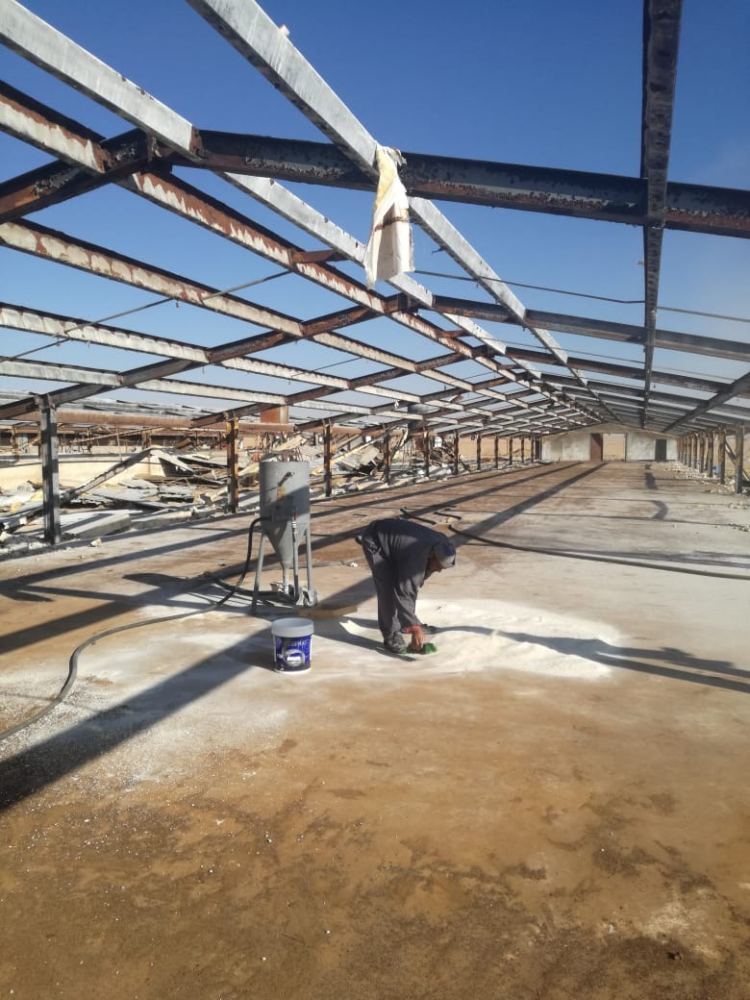
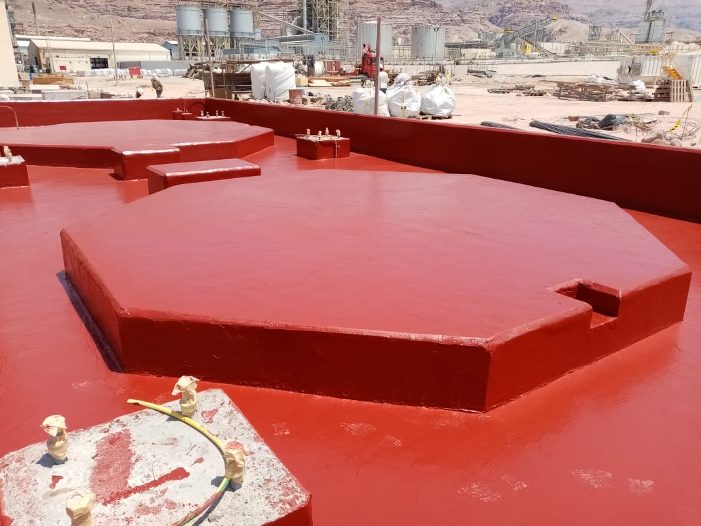
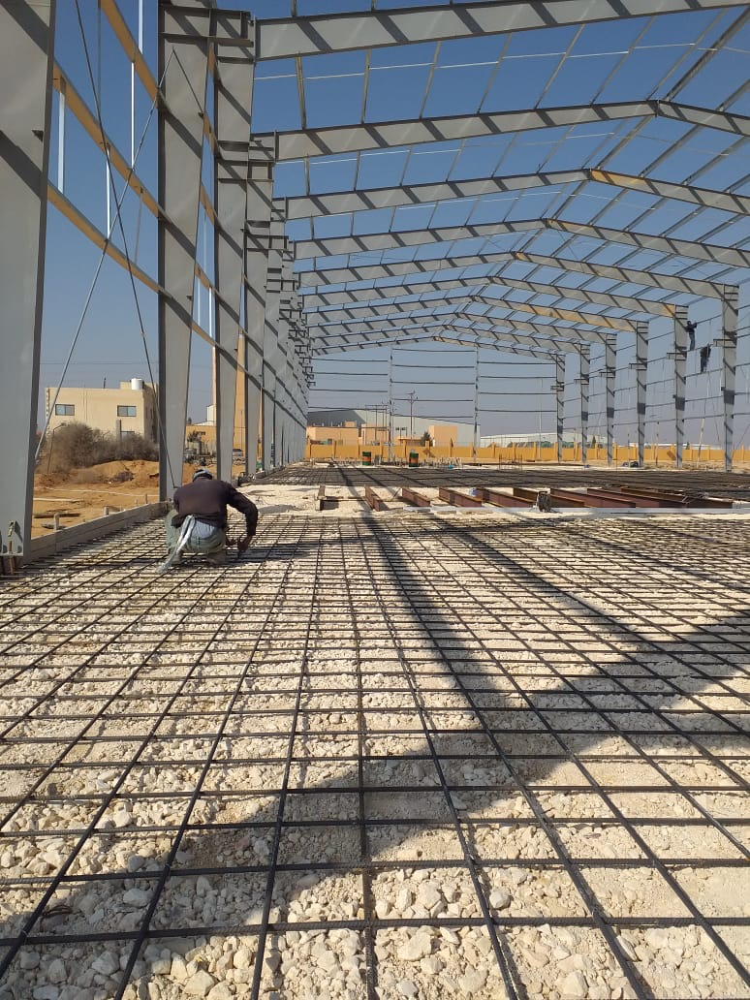
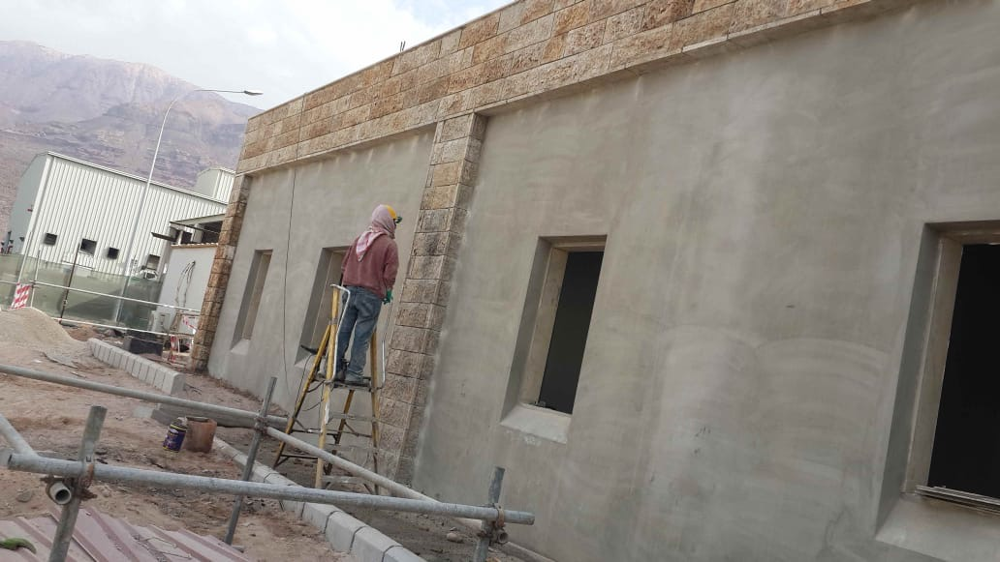
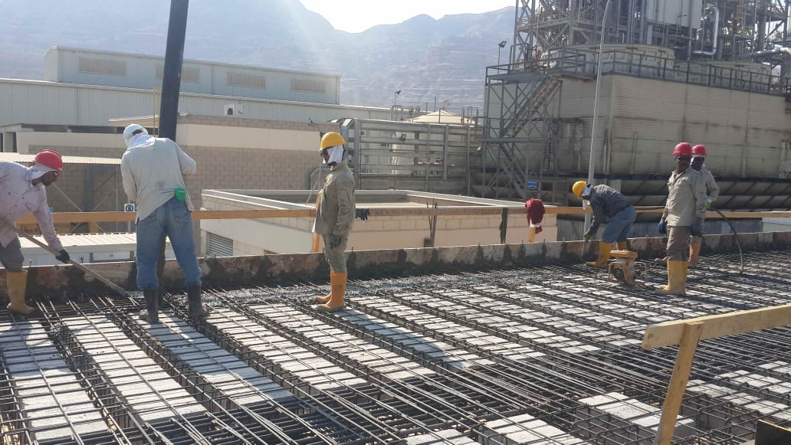
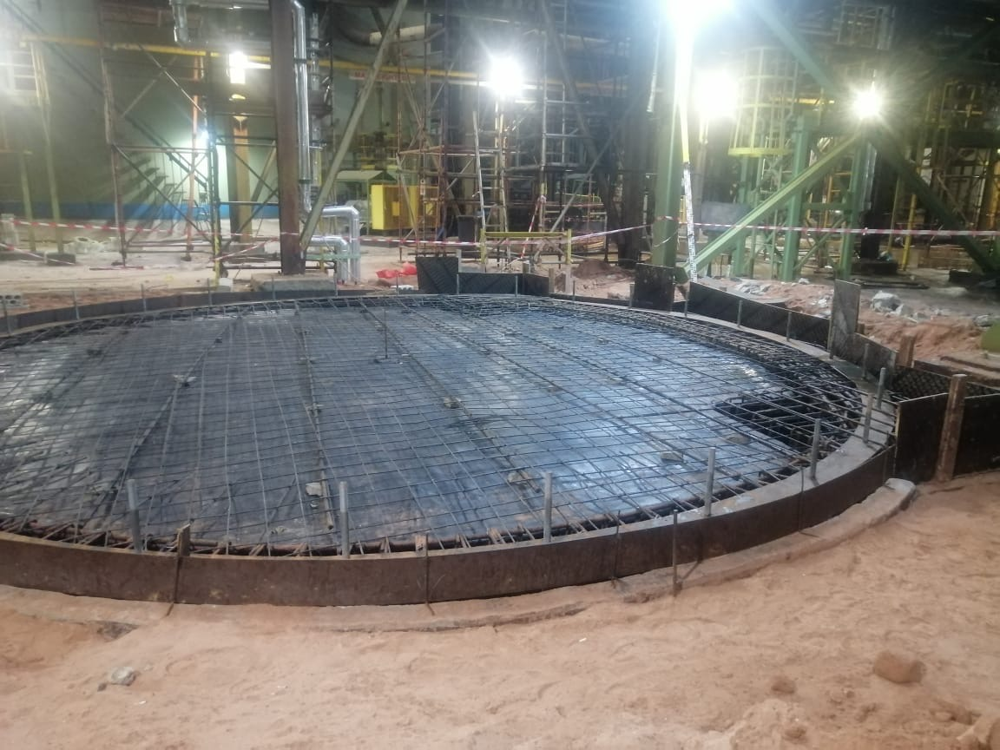
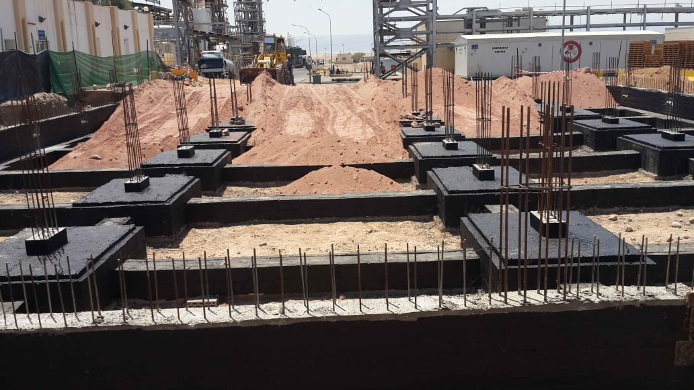
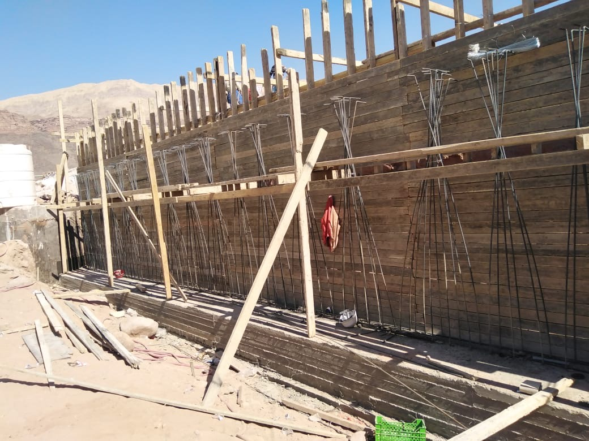
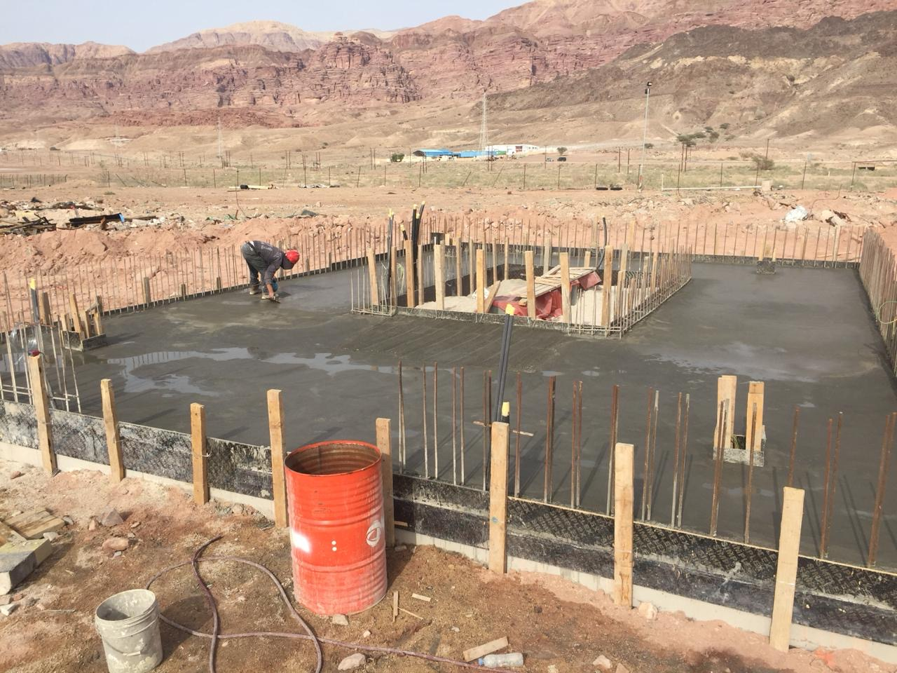

Years of company operations
Established in 2008, delivering civil contracting, industrial maintenance, earthworks, buildings and infrastructure.
Established in 2008, Muawiyah Madadha & His Partner is a Jordanian contracting company delivering earthworks, building construction, sewerage and civil infrastructure projects.

A photograph from our project archiveFounded in 2008, the company undertakes civil and infrastructure works for industrial, commercial and community clients. Its experience includes work at major Jordanian industrial facilities and projects for development organisations.
The company is registered with the Ministry of Public Works and Housing, the Government Tenders Department and the Jordanian Contractors Association.
More than 18 years of company delivery, supported by over three decades of civil engineering and project leadership experience.
Established in 2008, delivering civil contracting, industrial maintenance, earthworks, buildings and infrastructure.
Eng. Muawiyah Madadha brings more than 30 years of experience in construction, civil works, earthworks, infrastructure, project management and contract administration.
Earthworks, building construction, sewerage works, and civil maintenance and infrastructure.
Practical contracting capabilities across civil works, buildings and essential infrastructure.
Excavation, filling, grading, site preparation and associated civil works.
Industrial, administrative, service and supporting buildings.
Civil works associated with sewerage networks and related infrastructure.
Industrial facility maintenance, foundations, concrete works and site infrastructure.
Selected works delivered by the company since its establishment. The portfolio distinguishes direct company works from consortium delivery.
Project descriptions are based on company-provided information and will be supplemented with dates, contract scopes and original project photographs when available.
A selection of photographs from our industrial and civil construction projects.

Protective finishes and detailed concrete surface works.
Steel framing and structural assembly for industrial buildings.

Roof framing and building envelope construction.

Masonry, facade and finishing activities.

Reinforcement and concrete slab construction.

Circular concrete structures, reinforcement and industrial surface works.

Reinforcement, formwork and concrete placement.

Foundation preparation, formwork and structural concrete activities.

On-site civil construction and foundation activities.
The company is led by two partners combining civil engineering, project delivery, commercial operations and procurement expertise.
Civil engineer and executive leader with extensive experience in industrial civil works, earthworks, construction, contract administration and project leadership. Founder and General Manager since 2008.
A partner contributing to commercial development, procurement and supply chain management, supplier relations, workforce coordination and construction site operations.
MMC is the company's technology and digital business ecosystem, extending its construction-sector experience into procurement technology, vendor and service-provider registration, and construction intelligence.